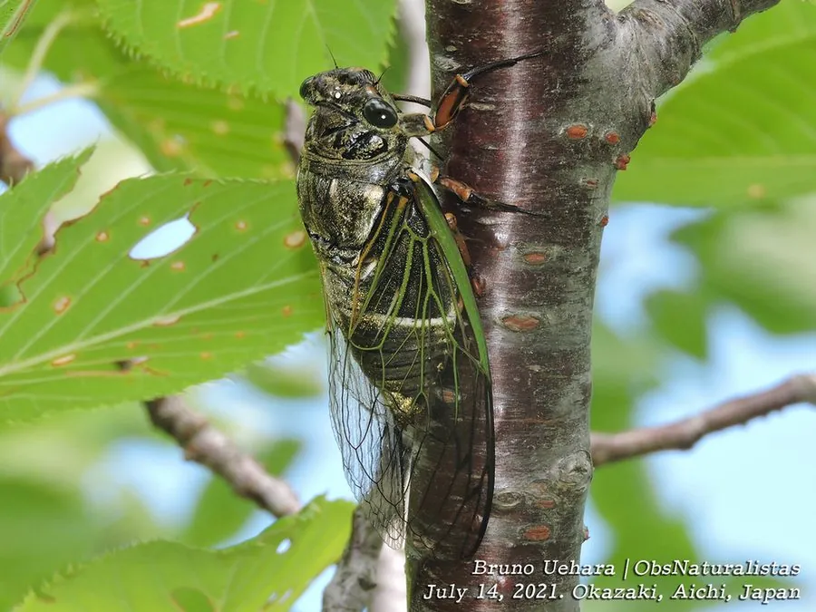

昆虫 · 动物界
大青蝉 Cryptotympana facialis

体型较大的蝉，体色青绿、翅脉粗壮，鸣声高亢洪亮，常见于中国南方和东亚的阔叶树上，是夏日里最有存在感的鸣虫之一。
- 分类
- 门节肢动物门纲昆虫纲目半翅目科蝉科属蚱蝉属
- 栖息环境
- 阔叶林、行道树和园林，成虫停在树干和枝条上
- 地理分布
- 东亚地区，中国南方常见
- 保护级别
- 暂无评估
物种志
大青蝉成虫体长 40–50 mm，是体型较大的蝉类。体色青绿或黑绿，翅透明、翅脉粗壮，复眼突出。雄蝉听觉器官和发音器都很发达，鸣声高亢洪亮，在夏日午后尤为明显。
大青蝉分布于东亚，中国南方常见，栖息于阔叶林和行道树上。若虫在土中生活，吸食树根汁液；成虫夏秋羽化，停在树干和枝条上吸食汁液，雄蝉鸣叫求偶。它停息时把翅膀像屋脊一样收在身体两侧，受惊时迅速飞走。大青蝉的体色青绿，与树叶颜色接近，停在枝头时不易被发现。蝉是许多鸟类和螳螂的猎物，也是夏季生态系统中的重要一环。目前它没有IUCN 的正式评估，中国未将其列入国家重点保护野生动物名录。
形态与习性
- 食性成虫和若虫吸食树木汁液
- 体长40–50 mm
- 体色青绿或黑绿色，与树叶接近
- 鸣声高亢洪亮，夏日午后尤为明显
- 若虫在土中生活，吸食树根汁液
- 分布东亚地区，中国南方常见
趣味知识
- 大青蝉的体色青绿，停在枝头时与树叶几乎融为一体。
- 它的鸣声高亢洪亮，是夏日午后最有存在感的声音之一。
- 蝉蜕是若虫羽化后留下的外壳，可以入药。